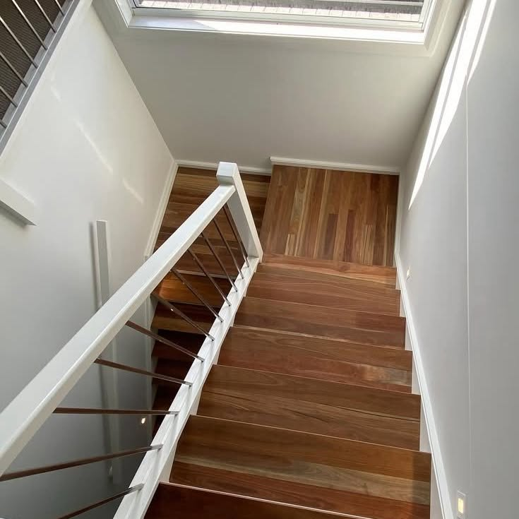
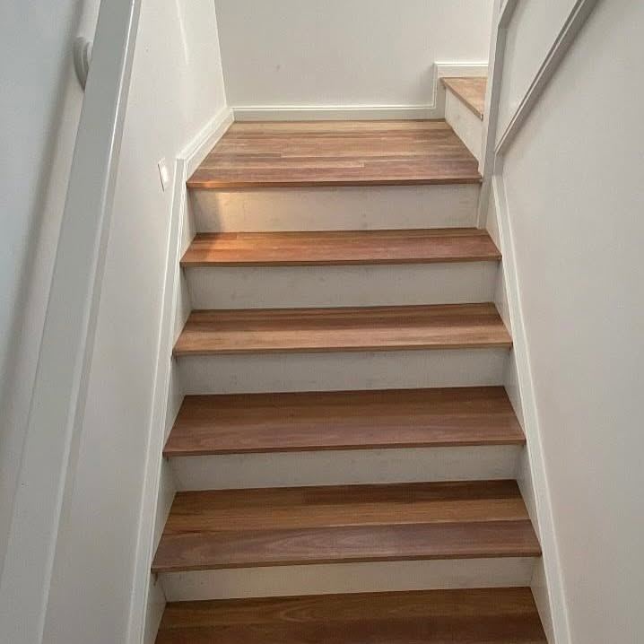
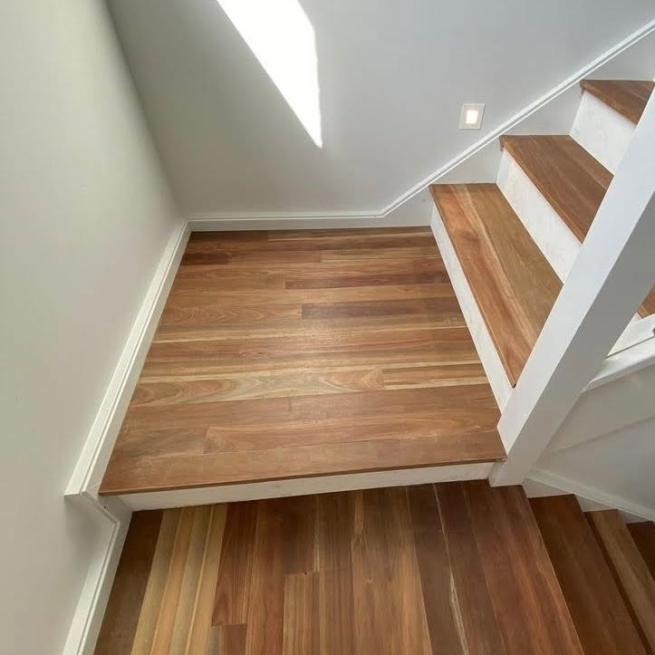
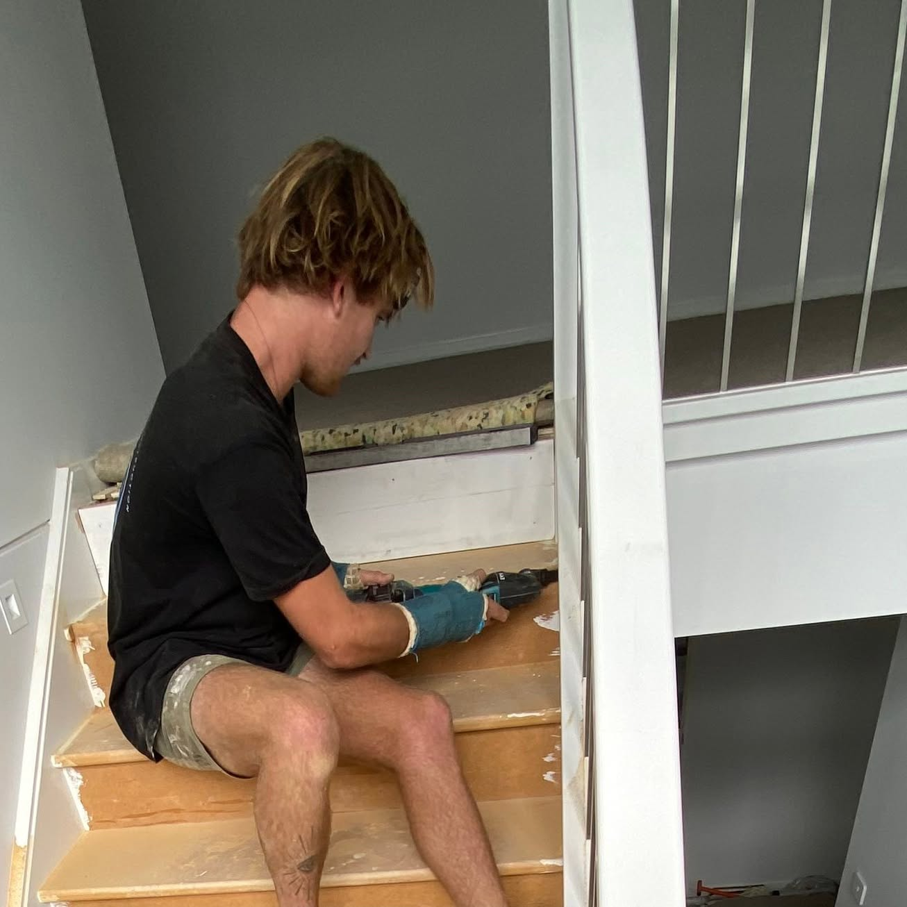
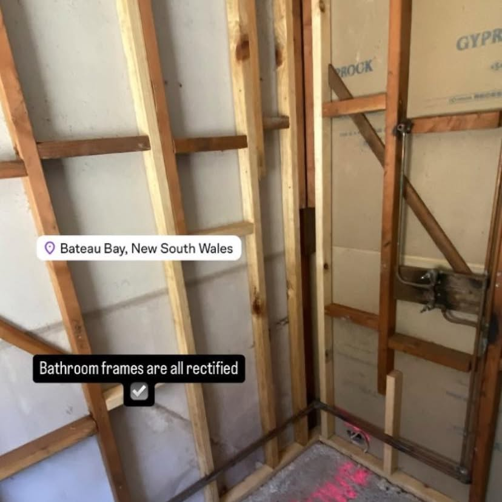
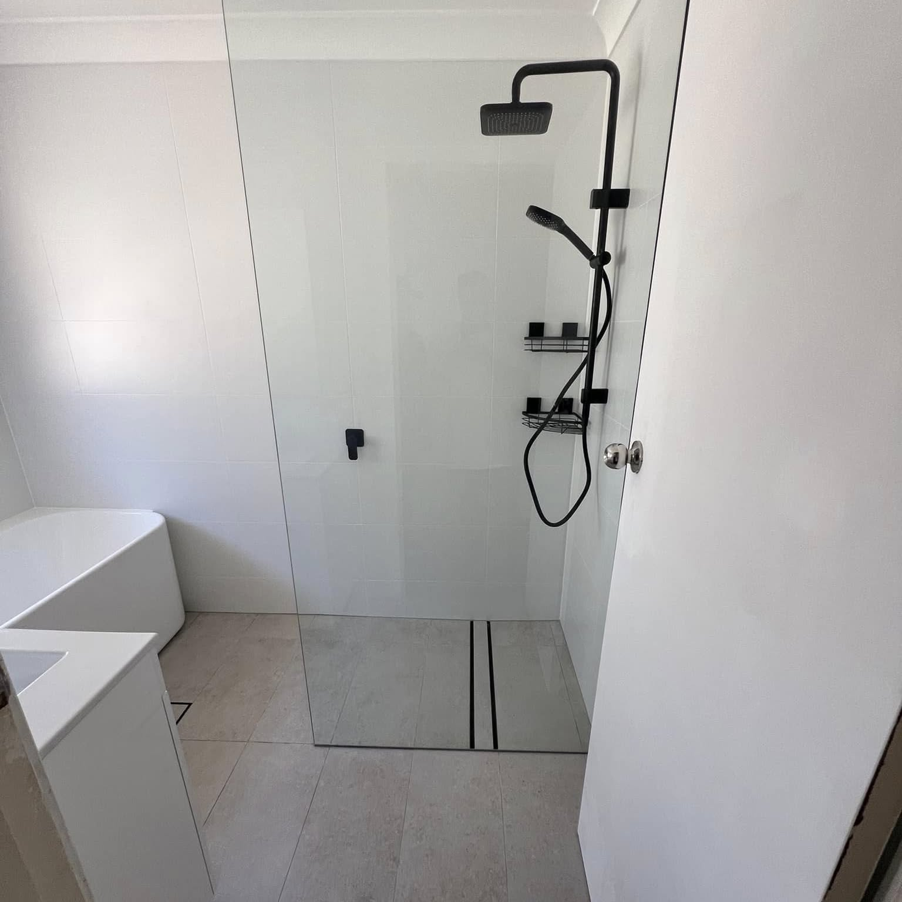

Decks & pergolas
Timber and composite decks and pergolas designed and built to the space — bearers and joists sized and spaced, posts on proper footings, and boards laid to drain.
Central Coast, NSW — All Aspects of Carpentry
Turner Brothers Carpentry & Construction takes on all aspects of carpentry — decks and pergolas, staircases and custom joinery, bathroom and kitchen renovations, and the framing and structural work behind them. Brothers on the tools, start to finish.

Carpentry is the trade across the whole build — from the framing that has to be right, to the joinery and stairs that everyone actually sees.
Timber and composite decks and pergolas designed and built to the space — bearers and joists sized and spaced, posts on proper footings, and boards laid to drain.
Straight, landing and open staircases with timber treads, and custom joinery built to fit the opening rather than the other way around.
Strip-out, framing, sheeting and the fit-out — the carpentry behind a renovation, done so the tiler and the cabinetmaker have something square to work to.
New frames, extensions, wall removal and structural repairs — set out, plumbed and straightened before anything is closed in.
Sheeting, lining and cornice for renovations and extensions, set to the frame and finished ready for paint.
The everyday carpentry: doors and windows, trims and mouldings, repairs and the jobs that are too small for most builders to bother with.
From the first call to the final clean-up, here is the order a job runs in.
Call or message with what you want built and where. Photos of the space help us price it before we visit.
We measure the space, check what is behind the walls or under the floor, and put the scope and price in writing.
Levels, lines and set-out are marked before any cutting, so the finished work lines up with the room and the rest of the build.
Framing, decking or joinery goes in — squared, fixed and finished to the standard the job is going to be judged on.
Trims, details and clean-up, then a walkthrough with you before the final payment.
Real Turner Brothers work on the Central Coast — staircases, decks, framing and finished renovations.





Carpentry sits underneath almost every other trade on a build, which is why it gets done right the first time.
Turner Brothers is the family that owns the business and does the work — you deal with the people on the tools.
Framing through to finish joinery — decks, pergolas, stairs, renovations and repairs, without a second trade for every stage.
Levels and lines checked against the room, not assumed, so the finished work sits square and level.
Scope and price in writing before the work starts, and variations priced before they are built.
The questions that come up on almost every carpentry quote.
All aspects of carpentry — decks and pergolas, staircases and joinery, bathroom and kitchen renovations, framing and structural work, plasterboard and general carpentry and repairs. If you are not sure, call and ask.
Yes. Timber and composite decks and pergolas, built to suit the space and the block — posts on proper footings, framing sized for the span, and the boards laid so water drains off them.
Yes. Straight and landing staircases with timber treads, and balustrades in timber, glass or cable, built to fit the opening you actually have.
Yes — renovations are a big part of the work. That means strip-out, framing, sheeting and the fit-out, so the trades that follow have square, straight work to build on.
The Central Coast and surrounding suburbs. Call or message with your suburb and we will tell you straight away whether you are in range.
Yes. We look at the job and give you a written price. No charge for the quote and no obligation to go ahead.
Start a conversation
Send a photo of the space and a rough idea of what you want, or call and talk it through. Quotes are free and there is no pressure to book the work in.